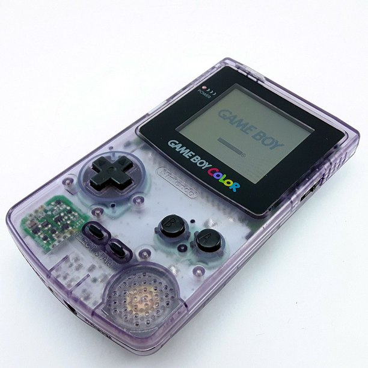

Gameboy Color

The Game Boy Color was introduced October 21, 1998. The GBC features a color screen rather than monochrome, but it is not backlit. It is slightly thicker and taller and features a slightly smaller screen than the Game Boy Pocket, its immediate predecessor in the Game Boy line. As with the original Game Boy, it has a custom 8-bit processor made by Sharp that is considered a hybrid between the Intel 8080 and the Zilog Z80. The American English spelling of the system's name, Game Boy Color, remains consistent throughout the world.
The Game Boy Color was introduced October 21, 1998. The GBC features a color screen rather than monochrome, but it is not backlit. It is slightly thicker and taller and features a slightly smaller screen than the Game Boy Pocket, its immediate predecessor in the Game Boy line. As with the original Game Boy, it has a custom 8-bit processor made by Sharp that is considered a hybrid between the Intel 8080 and the Zilog Z80. The American English spelling of the system's name, Game Boy Color, remains consistent throughout the world.